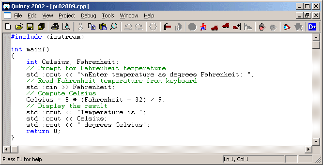

There are two ways to start Quincy:
Or:
Quincy always loads the source code files from your most recent Quincy session. The following screen shot shows the Quincy application window with a source code file loaded and ready to go. (The first time you start Quincy, there will be no source code document loaded.)

To exit from Quincy:
If any documents have been changed and not saved, a dialog box asks if you want to save them before exiting. The dialog box asks the question once for each modified document.